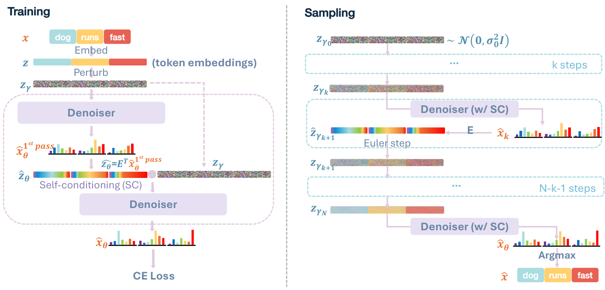
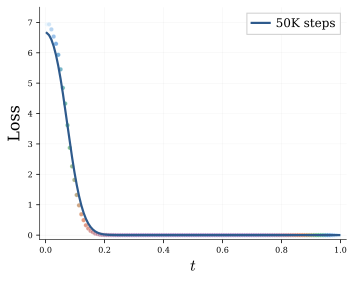
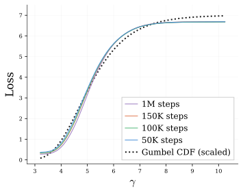
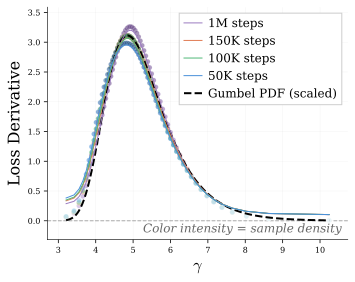
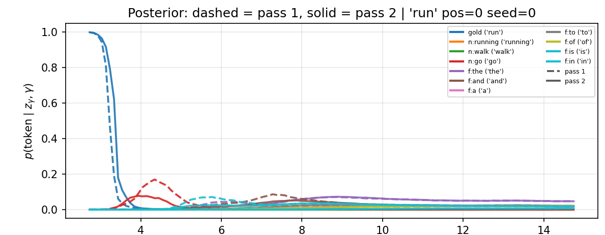
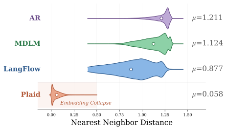

LangFlow：连续扩散在语言建模上比肩离散扩散
LangFlow: Continuous Diffusion Rivals Discrete in Language Modeling
GitHub star 为 2026-10-20 的快照。阅读状态、进度与收藏只保存在你的浏览器里。
逐节精读
这部分按论文的章节顺序，用本站自己的话把整篇论文从头讲一遍。读懂某个概念需要的背景知识，会在第一次用到它之前单独讲清楚（青色框）。每个结论都尽量说出“因为什么、所以什么”。标“推算”的数字是本站根据论文、官方代码或官方权重算出来的，不是论文原话。论文以 CC BY 4.0 发布，所以原图直接放在讲到它的地方；原图没画到的概念用本站的示意图补上。每节末尾有英文原文的链接。
0 导读：这篇论文解决什么问题
用扩散模型生成文字，有两条走法。一条是离散扩散：直接在词（token）上加噪，比如把词换成 [MASK] 或换成随机的别的词，再训练模型把它们还原。MDLM、Duo、LLaDA 都走这条路。另一条是连续扩散：先把每个词换成一个向量，再像生成图片那样在向量上加高斯噪声、逐步去噪，最后把向量“取整”回词。连续这条路起步更早（2022 年的 Diffusion-LM），因为它能直接借用图像扩散积累下来的全部工具；但它在语言模型最核心的指标——困惑度——上一直落后，于是 2023 年以后的主流几乎全部转向了离散扩散。
这篇论文想把连续路线拉回来。作者在词嵌入上做连续扩散，并用“流匹配”这套语言把整件事重新整理了一遍：(1) 训练时让网络预测“每个位置是哪个词”的概率、用交叉熵训练，作者证明这正好就是流匹配所需要的东西；(2) 用确定性的常微分方程（ODE）推出一个似然下界，从而能给连续模型算困惑度；(3) 发现语言数据真正“有信息量”的噪声区间非常窄，于是提出按信息量分配噪声的原则，用一个可学的 Gumbel 分布来安排噪声；(4) 把“自条件”这个技巧在评测困惑度时也打开。合在一起的模型叫 LangFlow。在约 1.3 亿参数、训练 100 万步的标准设定下，论文报告的困惑度上界是 LM1B 30.0、OpenWebText（OWT）24.6，与当时最好的掩码扩散 MDLM（31.0 / 23.2）不相上下；OWT 上的生成困惑度 36.5，好于所有离散扩散基线。
读这篇论文时最需要提前知道的一件事是：2026 年 5 月的后续论文 RePlaid（9 月更新 v2）用 LangFlow 公开的权重复算后指出，打开自条件时 LangFlow 的似然计算漏掉了一项，OWT 上的 24.6 补全以后大约是 33。这样一来，“困惑度追平离散扩散”这个结论目前不成立；生成质量方面的结论基本保留，但它的样本多样性偏低，也要打折看。本页在 3.5、4.3、5.6 和最后一节详细讲这件事。
读完这部分，你应该能回答这几个问题：
1 引言：连续扩散为什么在语言上一直落后
一句话是一串离散的词。要在它上面做“加噪—去噪”，第一步是决定每个位置用什么来表示，这决定了噪声长什么样：
- 离散扩散：每个位置就是一个词（或者 [MASK]）。加噪就是按一定概率把词换掉。理论上用连续时间马尔可夫链（CTMC）来描述，训练目标是对数似然的变分下界。代表有 D3PM、SEDD、MDLM、Duo。它的缺点是中间状态不连续，没法对它求梯度，图像扩散里很多依赖连续轨迹的技巧（比如把多步采样蒸馏成一步、用梯度做引导）用不上或要另想办法。
- 单纯形扩散：每个位置是一个长度为词表大小 \(V\) 的概率向量（各分量非负、加起来等于 1，这样的向量组成的集合叫“单纯形”）。噪声在单纯形上连续地变化。它是连续的，理论也干净；难处是 \(V\) 动辄三五万维，而真实数据都挤在单纯形的顶点上（one-hot 向量），信号极其稀疏，网络很难学好。
- 嵌入空间扩散：每个位置是一个 \(D\) 维的词向量（本文 \(D=768\)），噪声是普通的高斯噪声，和图像扩散完全一样。它的空间更稠密、维度可控，中间轨迹可以编辑；难处在于最后要把向量变回词，而且训练目标、似然怎么算，过去一直没有统一的说法。
加噪：把词换成 [MASK] 或随机词。
代表：D3PM、SEDD、MDLM、Duo、LLaDA。
长处：似然好、已扩到 8B 级别。
短处：中间状态不可求导。
加噪：在单纯形上连续变化。
代表：SSD-LM、类别流匹配、α-Flow。
长处：连续、理论完整。
短处：维度高、数据极稀疏。
加噪：高斯噪声，和图像一样。
代表：Diffusion-LM、CDCD、Plaid、LangFlow。
长处：稠密、可编辑、工具通用。
短处：要取整回词；目标和似然评估不统一。
论文认为嵌入空间这条路线被三件事卡住了。
第一，训练目标没有一个干净的理论依据。早期的 Diffusion-LM 让网络回归干净的词向量（均方误差），再加一项“取整”损失，主要靠经验调出来；2022 年的 CDCD 改用交叉熵，把网络输出的词概率换算成得分函数；2023 年的 Plaid 从似然下界出发，目标由好几项组成，作者说它实现起来很麻烦，要在一个 batch 里动态切分不同的样本去优化不同的项。不同工作各说各的，很难判断哪个设计才是对的。
第二，没有基于 ODE 的困惑度。困惑度是语言模型最主要的指标，它需要算出模型给一段真实文本的概率。连续扩散有两种采样方式：随机微分方程（SDE，每一步都注入新噪声）和概率流常微分方程（ODE，完全确定）。以前能算困惑度的连续语言模型（如 Plaid）都只给出了针对 SDE 的变分下界，没有针对 ODE 的。而作者想用的恰恰是 ODE 采样，因为 ODE 是从噪声到数据的一一映射，以后才能蒸馏成少步生成器。
第三，好的设计选择不清楚。没有可靠的困惑度，就没有一个靠得住的指标来比较噪声调度、自条件这些设计；离散扩散一侧的某些评测惯例（比如算困惑度时关掉自条件）又被原样搬到了连续模型上，作者认为这对连续模型不公平。
落后到什么程度，可以从论文自己的表 2 看到：在 LM1B 上，Diffusion-LM 的困惑度上界是 118.6，而 MDLM 是 31.0。Duo 论文在 LM1B 上重训 Plaid 10 万步，困惑度 89.9，同样步数的 Duo 是 43.0（那次评测没开自条件，这一点正是本文要争的）。
针对这三件事，论文的贡献分三块。第一，把嵌入空间扩散放进“流匹配”的框架，说明交叉熵损失是有理论依据的（通过 Bregman 散度），并由此推出一个基于 ODE 的负对数似然上界。第二，梳理设计空间：用对数噪信比 \(\gamma\) 做时间变量，提出“信息均匀”的噪声调度原则并用 Gumbel 分布实现；指出自条件对连续扩散和离散扩散的作用不一样。第三，把这些合起来，得到 LangFlow，并声称它是第一个在多个任务上超过离散扩散的连续扩散语言模型。
2 预备知识：流匹配，以及为什么学会“去噪器”就够了
想象空间里有一大群粒子，一开始按标准高斯分布散开。如果给空间里每个点、每个时刻都规定一个速度 \(\mathbf{u}_{t}(\mathbf{z})\)，让每个粒子都按 \(\mathrm{d}\mathbf{z}_{t}=\mathbf{u}_{t}(\mathbf{z}_{t})\,\mathrm{d}t\) 移动，那么到 \(t=1\) 时，粒子群会变成另一个分布。流匹配要学的，就是一个能把“高斯分布”恰好搬成“数据分布”的速度场。生成时只要从高斯里抽一个点，沿着速度场把这个常微分方程从 \(t=0\) 积到 \(t=1\)，终点就是一个样本。整个过程是确定的：同一个起点永远走到同一个终点。
直接写出整个分布的速度场很难，流匹配的做法是先只考虑一个数据点 \(\mathbf{z}\)。从噪声 \(\boldsymbol{\epsilon}\) 到 \(\mathbf{z}\) 画一条简单的路径：
沿着这条路径走的粒子，速度很容易算：对 \(t\) 求导得 \(\dot{\mathbf{z}}_{t}=\dot\alpha_{t}\mathbf{z}+\dot\sigma_{t}\boldsymbol{\epsilon}\)，再把 \(\boldsymbol{\epsilon}=(\mathbf{z}_{t}-\alpha_{t}\mathbf{z})/\sigma_{t}\) 代进去，就得到“条件速度”
真实的数据有很多个点。当粒子位于某个 \(\mathbf{z}_{t}\) 时，它“可能是从哪个数据点出发的噪声版本”是不确定的。流匹配的基本定理说：把条件速度按后验概率 \(p(\mathbf{z}\mid\mathbf{z}_{t})\) 加权平均，得到的“边缘速度”\(\mathbf{u}_{t}(\mathbf{z}_{t})=\mathbb{E}[\mathbf{u}_{t}(\mathbf{z}_{t}\mid\mathbf{z})\mid\mathbf{z}_{t}]\) 就能把高斯恰好搬成数据分布。训练时也不需要知道这个后验：直接让网络 \(\mathbf{v}_{\theta}\) 回归条件速度（论文式 5），它的最优解自动就是边缘速度。
关键的一步在这里：条件速度对 \(\mathbf{z}\) 是线性的。线性函数的期望等于“把期望代进去”，所以
也就是说，网络不必直接输出速度，只要输出一个“去噪器”\(\hat{\mathbf{z}}_{\theta}(\mathbf{z}_{t},t)\approx\mathbb{E}[\mathbf{z}\mid\mathbf{z}_{t}]\)——对干净数据的最佳猜测（后验均值）——再代进上面的公式就得到速度（论文式 6）。图像扩散里常说的“预测 \(x_0\)”就是这个。
当噪声是标准高斯时，流匹配学到的 ODE 和扩散模型的“概率流 ODE”是同一个东西，所以论文把“流匹配”和“扩散模型”当成同义词混用。
3 LangFlow：在词嵌入上做流匹配
3.1 用对数噪信比 \(\gamma\) 代替时间 \(t\)
在 \(\mathbf{z}_{t}=\alpha_{t}\mathbf{z}+\sigma_{t}\boldsymbol\epsilon\) 里，\(\alpha_{t}^{2}\) 是信号的“能量”，\(\sigma_{t}^{2}\) 是噪声的能量，两者之比 \(\alpha_{t}^{2}/\sigma_{t}^{2}\) 叫信噪比（SNR）。本文用它的倒数取对数，叫对数噪信比：
\(\gamma\) 越大噪声越多：\(\gamma=0\) 时信号和噪声一样强；\(\gamma\to+\infty\) 是纯噪声；\(\gamma\to-\infty\) 是干净数据。如果再要求 \(\alpha^{2}+\sigma^{2}=1\)（“保方差”路径，加噪前后总方差不变），那么 \(\alpha,\sigma\) 完全由 \(\gamma\) 决定：
举两个数：\(\gamma=0\) 时 \(\alpha^{2}=\sigma^{2}=0.5\)；\(\gamma=2.73\) 时 \(\sigma^{2}\approx0.94\)、\(\alpha^{2}\approx0.06\)，每一维的噪声能量是信号的约 15 倍（推算）。后面会看到，这已经是 LangFlow 训练时用到的“最干净”的一端了。
为什么要换成 \(\gamma\)？原因有两个。第一，去噪有多难，取决于噪声有多大，而不取决于“现在是第几步”这种人为编号；这个观点来自 VDM（Variational Diffusion Models）。只要网络的时间输入是 \(\gamma\)，同一个 \(\gamma\) 永远对应同样的噪声水平，那么换噪声调度（训练时多抽哪些 \(\gamma\)、采样时走哪些 \(\gamma\)）就不会改变网络看到的东西。调度和模型从此分开了，这正是第 4 节能单独研究调度的前提。
第二，后面会看到，语言真正需要学习的噪声区间非常窄：在常见的线性时间 \(t\) 上只占 \([0,0.2]\) 左右。\(\gamma\) 是对数刻度，噪声能量每翻一倍它只加 \(\log 2\)，于是这段窄区间在 \(\gamma\) 轴上被拉成了一大段（大约从 2.7 到 15），网络的时间嵌入能更细地分辨它。论文把这条以 \(\gamma\) 为参数的路径叫 \(\gamma\) 路径，并以它为实现的基础。
3.2 损失函数：为什么交叉熵就是流匹配
先把记号定下来。词表大小是 \(V\)，嵌入矩阵 \(\mathbf{E}\in\mathbb{R}^{V\times D}\) 的第 \(k\) 行 \(\mathbf{e}_{k}\) 是第 \(k\) 个词的向量。一句话 \(x=(x^{(1)},\dots,x^{(L)})\) 被换成 \(\mathbf{z}=(\mathbf{e}_{x^{(1)}},\dots,\mathbf{e}_{x^{(L)}})\in\mathbb{R}^{L\times D}\)，这就是要生成的目标。网络输入带噪的 \(\mathbf{z}_{\gamma}\) 和 \(\gamma\)，在每个位置 \(i\) 输出一个长度为 \(V\) 的概率向量 \(\hat{\mathbf{x}}^{(i)}_{\theta}\)，第 \(k\) 个分量表示“这个位置是第 \(k\) 个词”的概率。这和 BERT、MDLM 的输出一模一样。
给定一个凸函数 \(f\)，Bregman 散度定义为
直观上，它是“\(f\) 在 \(\mathbf{p}\) 处的真实值”减去“从 \(\mathbf{q}\) 处画的切线在 \(\mathbf{p}\) 处的值”；因为 \(f\) 是凸的，切线总在函数下方，所以它总是非负，且只有 \(\mathbf{p}=\mathbf{q}\) 时为零。两个熟悉的特例：取 \(f(\mathbf{p})=\|\mathbf{p}\|^{2}\)，它就是平方欧氏距离；取 \(f(\mathbf{p})=\sum_k p_k\log p_k\)（负熵），它就是 KL 散度。
它有一个对本文至关重要的性质。如果目标 \(\mathbf{p}\) 是随机的、预测 \(\mathbf{q}\) 是固定的，展开期望可以得到（论文式 11–13）
只有最后一项和 \(\mathbf{q}\) 有关，而它在 \(\mathbf{q}=\mathbb{E}[\mathbf{p}]\) 时取到最小值零。所以，不管选哪个凸函数 \(f\)，用 Bregman 散度做损失时，最优预测都是目标的期望。平方误差的最优解是均值，这是大家熟悉的特例。
现在把这个性质用到语言上。在位置 \(i\)，令目标 \(\mathbf{p}\) 为真实词的 one-hot 向量 \(\mathbf{1}_{x^{(i)}}\)，预测 \(\mathbf{q}\) 为网络输出 \(\hat{\mathbf{x}}^{(i)}_{\theta}\)。给定带噪输入 \(\mathbf{z}_{\gamma}\) 时，真实词是随机的，one-hot 向量的期望正好是后验分布：第 \(k\) 个分量是 \(\Pr(x^{(i)}=k\mid\mathbf{z}_{\gamma})\)。于是，用任何一种 Bregman 散度训练，网络的最优输出都是每个位置的词的后验分布，论文称之为“后验匹配”。
交叉熵是其中最常用的一个。取 \(f(\mathbf{p})=\mathbf{p}\cdot\log\mathbf{p}\)，对 one-hot 目标，Bregman 散度化简成 \(-\log\hat{x}^{(i,x^{(i)})}_{\theta}\)，也就是“给真实词的概率取负对数”。对所有位置平均、对噪声水平取期望，得到 LangFlow 的训练目标：
其中 \(\pi(\gamma)\) 是训练时抽噪声水平的分布（第 4 节的主角）。
这和流匹配有什么关系？回忆上一节：流匹配需要的去噪器是 \(\mathbb{E}[\mathbf{z}\mid\mathbf{z}_{\gamma}]\)。在语言里，位置 \(i\) 的干净向量就是某个词的嵌入 \(\mathbf{e}_{x^{(i)}}\)，所以它的后验均值就是“按后验概率给各个词向量加权平均”：
因果链是这样的：交叉熵的最优解是词的后验分布；后验分布乘以嵌入矩阵就是干净向量的后验均值；后验均值代入条件速度就是流匹配的边缘速度。所以网络在“词”的层面用交叉熵训练，在“向量”的层面自动得到了 ODE 采样需要的去噪器。论文附录 A.3 还给出另一种解读：交叉熵正好是“用逐位置独立的分布去近似后验”的负对数似然，这和变分流匹配（VFM）的写法一致。
为什么不像 Diffusion-LM、Plaid 那样直接用均方误差回归干净向量？对固定的嵌入来说，均方误差的最优解也是后验均值，看起来殊途同归。差别出在嵌入是和网络一起学的：均方误差可以靠“把所有词向量挪得彼此更近”来变小，因为向量挤在一起时，猜错词的代价也变小了。论文附录 C.3 把这叫作嵌入塌缩，并给了证据（见 5.5 节）。交叉熵直接惩罚“给真实词的概率太低”，词向量挤在一起只会让区分更难、损失更大，所以它反过来会把词向量推开。
- “交叉熵等价于流匹配”说的是最优解相同：两种损失训到最好时给出同一个速度场。它并不说交叉熵是对数似然的一个下界。LangFlow 的训练目标不是似然下界，这一点和 Plaid、RePlaid 那种“直接最小化负对数似然上界”的做法不同；后来 RePlaid 正是从这里批评它（见最后一节）。
- 网络只输出每个位置各自的边缘分布，没有建模位置之间的联合分布。这对流匹配足够了，因为速度只需要每个位置的后验均值；位置之间的依赖是通过多步采样、每一步重新看整句话体现出来的。
3.3 训练流程与网络细节

按算法 1，一个训练步是这样走的：
- 取一句话，查表得到词向量 \(\mathbf{z}\)。
- 从 \((0,1)\) 里均匀抽一个数 \(q\)（用低差异序列，让一个 batch 里的 \(q\) 铺得更匀），换算成 \(\gamma=\mu-\beta\log(-\log q)\)，也就是从 Gumbel 分布里抽一个噪声水平（第 4 节解释为什么）。
- 按 \(\sigma_{\gamma}^{2}=\operatorname{sigmoid}(\gamma)\)、\(\alpha_{\gamma}^{2}=\operatorname{sigmoid}(-\gamma)\) 加噪得到 \(\mathbf{z}_{\gamma}\)。
- 以 0.25 的概率做自条件：先不带梯度地跑一遍网络，把它的预测换成向量 \(\hat{\mathbf{z}}\) 当作额外输入；否则额外输入填 0。
- 正式跑一遍网络，算交叉熵；同时算一个让 Gumbel 曲线去拟合交叉熵的“调度损失”（4.2 节）；两项相加，做一步优化。
网络。网络和离散扩散的基线（MDLM、Duo 的代码库）完全相同：一个改造过的扩散 Transformer（DiT），12 层、隐藏维度 768、12 个注意力头，旋转位置编码，双向注意力（不加因果掩码），噪声水平通过 AdaLN（自适应层归一化，用时间嵌入去调制每层的缩放和偏移）输入，时间嵌入 128 维。唯一的区别是时间输入换成了 \(\gamma\)。论文附录 C.1 说明了三处小改动：
- 自条件输入。进入 DiT 之前，把输入改成 \(\mathbf{z}_{\gamma}+W_{\rm in}\mathbf{z}_{\gamma}+W_{\rm SC}\mathbf{z}_{\rm SC}\)，两个矩阵都初始化为零。初始化为零意味着训练一开始网络完全忽略自条件，之后再慢慢学会用它。
- 嵌入归一化。每个词向量先归一化到单位球面，再乘以 \(\sqrt{D}=\sqrt{768}\approx27.7\)。这样每一维的平均能量是 1，和标准高斯噪声的每一维能量相同；这借鉴了潜扩散（Stable Diffusion）里“让数据和噪声同一尺度”的做法。如果不这样做，可学的嵌入可能整体变大或变小，等于偷偷改变了信噪比。
- 来自 Plaid 的“输出先验”。在网络输出的 logits 上加一项 \(r\cdot\log p(\mathbf{z}^{(i)}_{\gamma}\mid x^{(i)})=r\cdot\frac{\alpha_{\gamma}}{\sigma_{\gamma}^{2}}\,\mathbf{e}_{x^{(i)}}^{\top}\mathbf{z}^{(i)}_{\gamma}+\text{常数}\)。它的含义是：如果各个词互相独立、出现概率都一样，那么只看这个位置的带噪向量，各个词的后验概率正好就是这一项做 softmax。加上它以后，网络只需要学“上下文带来的修正”，不必从零学会“哪个词向量离带噪向量最近”。系数 \(r\) 在前 5000 步从 0 涨到 1，之后保持为 1。正文说的“带 5K 步预热的预条件跳跃连接”就是这一项；官方代码里它叫 bias，系数写成 \(\alpha_{\gamma}/\sigma_{\gamma}^{2}\)。
训练设置。AdamW，学习率 \(3\times10^{-4}\)，线性预热 2500 步后保持常数，EMA 衰减 0.9999，bfloat16。LM1B 在 4 张 RTX 6000 上训练，OWT 在 32 张 A100 上训练。两个数据集都训 100 万步，batch 512。
3.4 ODE 采样：每一步“假设去噪器不变”精确地走一段
采样时，先在 \(\gamma\) 轴上排好 \(N+1\) 个点 \(\gamma_{0}=b>\gamma_{1}>\dots>\gamma_{N}=a\)，从纯噪声一侧走到最干净的一侧（这些点怎么排见 4.2 节）。起点从 \(\mathcal{N}(\mathbf{0},\sigma_{b}^{2}\mathbf{I})\) 抽。第 \(k\) 步做三件事：
- 把当前的 \(\mathbf{z}_{k}\)、\(\gamma_{k}\) 和上一步的预测（自条件输入）送进网络，得到每个位置的词概率 \(\hat{\mathbf{x}}_{k}\)；
- 乘以嵌入矩阵得到目标点 \(\hat{\mathbf{z}}=\mathbf{E}^{\top}\hat{\mathbf{x}}_{k}\)，同时把它存下来作为下一步的自条件输入；
- 按下式更新：
这个式子从哪来？附录 A.2 给了一个很漂亮的变量替换：令 \(\mathbf{y}=\mathbf{z}/\sigma\)、\(s=\alpha/\sigma\)，ODE 就变成 \(\mathrm{d}\mathbf{y}=\hat{\mathbf{z}}_{\theta}\,\mathrm{d}s\)。如果假设一步之内 \(\hat{\mathbf{z}}\) 不变，这个方程可以精确积分：\(\mathbf{y}_{k+1}=\mathbf{y}_{k}+(s_{k+1}-s_{k})\hat{\mathbf{z}}\)；两边乘以 \(\sigma_{k+1}\) 就是上面的更新式。所以它虽然被叫作“一阶欧拉法”，实际上和图像扩散里的 DDIM 一样，是“去噪器分段为常数”的精确解，只在“去噪器其实在变”这一点上有误差。
走到 \(\gamma_{N}=a\) 以后，再跑一次网络，每个位置取概率最大的词，作为最终输出。所以生成一段文字大约要 \(N\) 次网络调用，每次都要对整段序列做一遍双向注意力。
作者特意选 ODE 而不是 SDE，理由是：SDE 每一步注入新的随机噪声，起点和终点之间不再是一一对应；ODE 保持了这种对应，以后可以用一致性模型之类的方法把它蒸馏成几步甚至一步的生成器。不过本文没有做任何蒸馏，这只是为以后留的接口。
3.5 困惑度怎么算：一个基于 ODE 的似然下界
困惑度是“模型给真实文本的平均每词负对数概率”取指数。自回归模型可以把一句话的概率精确地拆成逐词条件概率之积，所以它的困惑度是精确值。扩散模型算不出精确概率，只能算出对数概率的一个下界，对应困惑度的一个上界：真实困惑度不会比它更差。所以扩散模型的表格里写的都是“≤ 某个数”，数字越小越好，但它和自回归的精确值不是同一种东西。
瞬时变量替换公式回答的是：粒子沿着 ODE 移动时，它所在位置的概率密度怎么变？答案是
其中 \(\nabla\cdot\mathbf{v}\) 是速度场的散度（雅可比矩阵的迹）。直观地说，如果速度场让周围的粒子彼此散开（散度为正），同样多的概率质量摊到更大的体积上，密度就下降；彼此靠拢则密度上升。所以只要沿着轨迹把散度积分起来，就能从一端的密度推出另一端的密度。
定理 3.1 的思路可以看成一个变分自编码器（VAE）：
- 潜变量是最干净那一端的带噪向量 \(\mathbf{z}_{a}\)。
- 编码器就是前向加噪：\(q(\mathbf{z}_{a}\mid x)=\mathcal{N}(\alpha_{a}\mathbf{z},\sigma_{a}^{2}\mathbf{I})\)。
- 先验 \(p_{a}(\mathbf{z}_{a})\) 由 ODE 定义：在最嘈杂的一端 \(\gamma=b\) 放一个高斯 \(\mathcal{N}(\mathbf{0},\sigma_{b}^{2}\mathbf{I})\)，沿 ODE 推到 \(\gamma=a\) 得到的分布。
- 解码器是网络在 \(\gamma=a\) 时给出的逐位置词概率：\(\hat p(x\mid\mathbf{z}_{a})=\prod_{i}\hat{x}^{(i,x^{(i)})}_{\theta}(\mathbf{z}_{a},a)\)。
VAE 的证据下界是 \(\log p(x)\ge\mathbb{E}_{q}\big[\log p_{a}(\mathbf{z}_{a})+\log\hat p(x\mid\mathbf{z}_{a})-\log q(\mathbf{z}_{a}\mid x)\big]\)。三项分别这样算：
- \(-\log q\) 的期望是高斯分布的熵，等于 \(\tfrac{LD}{2}\log(2\pi e\sigma_{a}^{2})\)。
- \(\log p_{a}(\mathbf{z}_{a})\) 用瞬时变量替换：把 \(\mathbf{z}_{a}\) 沿 ODE 推到 \(\gamma=b\) 得到 \(\mathbf{z}_{b}\)，则 \(\log p_{a}(\mathbf{z}_{a})=\log p_{b}(\mathbf{z}_{b})+\int_{a}^{b}\nabla\cdot\mathbf{v}\,\mathrm{d}\gamma\)。在 \(\gamma\) 路径上速度场可以写成 \(\mathbf{v}=\tfrac{\alpha_{\gamma}^{2}}{2}\mathbf{z}_{\gamma}-\tfrac{\alpha_{\gamma}}{2}\hat{\mathbf{z}}_{\theta}\)（附录式 38），所以散度是 \(LD\cdot\tfrac{\alpha_{\gamma}^{2}}{2}-\tfrac{\alpha_{\gamma}}{2}\nabla\cdot\hat{\mathbf{z}}_{\theta}\)。第一部分是常数，积分后等于 \(LD\log(\sigma_{b}/\sigma_{a})\)；第二部分要靠网络算。
- \(\log\hat p(x\mid\mathbf{z}_{a})\) 直接读网络输出。
把常数合并（它们恰好抵消到只剩 \(LD/2\)），得到论文式 20：
怎么算出来。难点是散度 \(\nabla\cdot\hat{\mathbf{z}}_{\theta}\)，即一个 \(LD\times LD\) 雅可比矩阵的迹。LM1B 上 \(LD=128\times768=98{,}304\)，OWT 上 \(1024\times768=786{,}432\)（推算），一维一维地求是不可能的。论文用 Hutchinson 迹估计：随机抽一个均值为零、协方差为单位阵的向量 \(\mathbf{u}\)，则 \(\mathbb{E}[\mathbf{u}^{\top}J\mathbf{u}]=\operatorname{tr}J\)，而 \(\mathbf{u}^{\top}J\) 只需要一次反向传播。积分用 128 步的二阶 Heun 方法；起点 \(\mathbf{z}_{a}\) 每句话抽一个。\(a\)、\(b\) 是学到的 Gumbel 分布的上下 \(10^{-5}\) 分位点；本站从公开权重里读出：LM1B 模型是 \(a\approx2.73\)、\(b\approx14.74\)，OWT 模型是 \(a\approx2.60\)、\(b\approx16.05\)（推算）。
这个下界和 Plaid 的有什么不同？Plaid 用的是 VDM 式的连续时间变分下界，它对应“带随机噪声的反向过程”（SDE）；LangFlow 的下界只在两端用了 VAE 式的近似，中间那段 ODE 的密度变化是精确算出来的，对应的是“确定性的 ODE 采样”这个模型。作者认为这让评测和采样方式一致，并称它比 SDE 下界更好。
- 自条件让这个公式不再成立。打开自条件时，网络的输入除了 \(\mathbf{z}_{\gamma}\) 还有“对同一个 \(\mathbf{z}_{\gamma}\) 先跑一遍得到的预测”。于是速度场是 \(\mathbf{z}_{\gamma}\) 的一个复合函数，散度要用链式法则：\(\nabla\cdot\big[f(\mathbf{z},s(\mathbf{z}))\big]=\operatorname{tr}(\partial_{\mathbf{z}}f)+\operatorname{tr}(\partial_{s}f\cdot\partial_{\mathbf{z}}s)\)。本站读官方 eval_ppl.py 看到，第一遍的预测在求散度之前被 detach 了，第二项因此被丢掉；丢掉以后积分的就不是采样时那个速度场的散度，算出来的数也就不再保证是上界。后续的 RePlaid 论文专门量过这一项，在 OWT 上它让困惑度少算了约 8.35（详见 4.3 节和最后一节）。
- “比 SDE 下界更好”没有直接对照。ODE 和 SDE 在网络不完美时定义的是两个不同的模型，两个下界衡量的不是同一个分布。论文没有在同一个 LangFlow 模型上同时报告两种下界，所以“取代 SDE 下界”目前只是论证，不是实验结论。
- 估计本身是随机的。每句话只抽一个 \(\mathbf{z}_{a}\)、每步只用一个 Hutchinson 向量，单句的估计方差很大，但在整个验证集上平均后，对“离散化后的下界”是无偏的。
4 两个设计选择：噪声调度与自条件
4.1 语言真正有信息的噪声区间非常窄
作者先照搬图像扩散的强基线（Stable Diffusion 3、EDM）的做法：用线性时间 \(t\) 做条件，在 \(t\) 上均匀抽噪声水平。在 LM1B 上训 5 万步以后，把整个数据集上的交叉熵按 \(t\) 画出来，就是下图左。



左图说明两件事。训练时，\(t>0.2\) 的那一大段里网络已经能完美地认出每个词，再在这里练是浪费；采样时，走在这一段的步子不会给样本带来任何新信息，也是浪费。在 \(t\) 上均匀分配，等于把一半以上的训练和采样预算花在了没有信息的地方。
为什么语言会这样？因为语言数据的目的地是有限个、彼此隔开的点（词向量），而且它们住在 768 维的空间里。噪声每一维都比信号大很多，但区分两个词靠的是 768 维的证据加在一起。本站做一个粗略估算：按论文附录 C.3，LangFlow 的词向量与最近邻的平均球面距离是 0.877；若把它理解为夹角（弧度），在半径 \(\sqrt{768}\) 的球面上，两个最近邻词向量的平方距离约为 \(2\times768\times(1-\cos0.877)\approx554\)。在 \(\gamma=2.73\)（每维信噪比约 0.065）时，只看这一个位置、不看上下文，区分这两个词的对数似然比平均约为 \(0.065\times554/2\approx18\) 奈特，几乎不会认错；到 \(\gamma=4.83\)（信噪比约 0.008）时只剩约 2.2 奈特；到 \(\gamma=8\) 时只剩约 0.1 奈特，几乎认不出（以上均为推算，忽略了上下文和词频）。这和图 2 的形状对得上：信息的变化集中在 \(\gamma\) 约 3 到 8 之间。图像就不同，像素值是连续的，细节要到噪声很小时才分辨得出来，所以图像扩散的最佳调度不能直接搬过来。
4.2 信息均匀原则，以及为什么是 Gumbel 分布
作者接着观察图 2 中：不同训练阶段的检查点，交叉熵随 \(\gamma\) 的曲线几乎一样。解释是把交叉熵拆开：交叉熵 = KL 散度（模型预测和真实后验差多少）+ 真实后验的熵 \(H_{\gamma}\)。KL 部分在训练早期就几乎降到零，剩下的主要是 \(H_{\gamma}\)，即“在噪声水平 \(\gamma\) 下，这个位置到底是哪个词还剩多少不确定性”。这是数据本身的性质，模型再怎么训也降不下去，所以曲线稳定。
于是可以把采样看成一个“获取信息”的过程：从纯噪声处的 \(H_{+\infty}\) 一路降到干净数据处的 0。\(H_{\gamma}\) 对 \(\gamma\) 的导数 \(H'_{\gamma}\) 衡量“噪声每减少一点，能确定多少关于词的信息”。作者提出信息均匀原则：让噪声水平的分布密度和 \(H'_{\gamma}\) 成正比，\(\pi(\gamma)\propto H'_{\gamma}\)。这样每一步采样获得的信息量相等，训练的力气也花在信息变化最快的地方。
剩下的问题是 \(H_{\gamma}\) 长什么样。作者用不同检查点的平均交叉熵作为 \(H_{\gamma}\) 的替身，做有限差分并平滑，发现导数曲线是右偏的，和 Gumbel 分布的密度吻合得最好。于是设
这正是 Gumbel 分布的累积分布函数乘以 \(H_{+\infty}\)。三个参数 \(H_{+\infty}\)（纯噪声时的平均后验熵）、\(\mu\)（位置）、\(\beta\)（宽度）都设成可学的，用一个单独的“调度损失”\(\mathcal{L}_{\rm Scheduler}=\mathbb{E}\big[(\ell_{\rm CE}(\gamma)-H_{\gamma})^{2}\big]\) 去拟合实际的交叉熵；交叉熵这边停掉梯度，所以调度损失只更新这三个数，不干扰主网络。原因是作者观察到 Gumbel 的形状在训练中会轻微漂移，让它跟着训练一起调整。
落到实现上非常简单，因为 Gumbel 分布的分位数有闭式：
- 训练：抽均匀数 \(q\)，令 \(\gamma=\mu-\beta\log(-\log q)\)，这就是从 Gumbel 分布抽样，密度正比于 \(H'_{\gamma}\)。
- 采样：\(N\) 步时，取第 \(k\) 个点为 \(1-k/N\) 分位数。因为 \(H_{\gamma}/H_{+\infty}\) 正是这个累积分布函数，每一步正好让后验熵下降 \(H_{+\infty}/N\)。
- 截断：\(\gamma\) 只在 \(10^{-5}\) 到 \(1-10^{-5}\) 分位数之间取，两端分别就是 3.5 节的 \(a\) 和 \(b\)。
效果：论文说这一调度“显著改善了样本质量”，把生成困惑度从约 1000 降到 154.2（此时还没开自条件）。这个“约 1000”只在正文里一句话提到，没有表格。
和已有方法的关系。论文的相关工作把它和“重要性采样”对比：按各噪声水平的损失大小分配训练预算（Nichol & Dhariwal 2021；Gong 等人在 DiffuSeq 里把它用到嵌入扩散上），而本文按损失的导数分配。还有一个更直接的前例论文没有在这里提到：2022 年 CDCD 的“时间扭曲”（time warping）。CDCD 的启发式正是“预测熵应当随均匀时间线性增长”，做法也是用均方误差拟合一条单调曲线到交叉熵上，再用它的逆来抽样和排采样步，以保证“每一步采样解决同样多的不确定性”（CDCD §3.3 ↗）。两者的区别在于：CDCD 在时间 \(t\) 上用分段线性函数，LangFlow 在 \(\gamma\) 上用带三个参数的 Gumbel 族，并给出了“交叉熵 ≈ 后验熵”的解释。同期的 FLM 也独立看到了“决定是哪个词的时段很窄、词表越大越窄”，它沿用 CDCD 的思路，把“解码进度”当作新的时间来均匀分配（见 FLM 精读 4.1）。
- 信息均匀原则是一个为了效率的启发式，不是为了让似然最优推出来的。3.5 节的似然下界只依赖模型和端点 \(a,b\)，不依赖训练时 \(\gamma\) 怎么抽。后来 RePlaid 从另一个方向得到了类似的结果：把噪声调度当成似然下界的一部分、以降低估计方差为目标去学，交叉熵会自动随时间近似线性下降。
- “用交叉熵代替后验熵”只在 KL 部分已经很小时才准确；训练最初几千步里这一替代是有偏的，这也是作者让参数一起学、跟着漂移的原因之一。
4.3 自条件：对连续扩散和离散扩散作用不同
这个技巧来自 2022 年的 Analog Bits（Chen、Zhang、Hinton）。扩散采样每一步都会对干净数据做一次预测，下一步却把它扔掉、从头再猜。自条件把上一步的预测当作额外输入喂给网络，让它在已有的猜测上修正。训练时没有“上一步”，于是以一定概率（本文 0.25）先不带梯度地跑一遍网络，把这一遍的预测当作额外输入，再跑第二遍算损失；其余时候额外输入填 0，网络因此学会“有提示就用、没有也能做”。采样时第一步填 0，之后每一步都用上一步的预测，不增加网络调用次数；训练时平均多出约 25% 的前向计算（推算）。
作者指出了一个评测惯例：离散扩散的论文通常在关掉自条件的情况下报告困惑度，这个惯例被搬到了连续模型上。例如 Duo 论文报告的 Plaid 困惑度就没有开自条件。作者在 LM1B 上分别对 MDLM 和 LangFlow 开、关自条件，得到表 1：
| 模型（LM1B） | 生成困惑度 ↓ | 变化 | 困惑度上界 ↓ | 变化 |
|---|---|---|---|---|
| MDLM | 103.9 | – | 31.0 | – |
| MDLM + 自条件 | 94.9 | −9.0 | 32.7 | +1.7 |
| LangFlow | 154.2 | – | 49.0 | – |
| LangFlow + 自条件 | 81.5 | −72.7 | 30.0 | −19.0 |
表中的不对称很醒目。对 MDLM，自条件让生成更好，但困惑度反而变差 1.7，这从侧面说明了离散一侧“算困惑度时关掉它”的惯例是合理的。对 LangFlow，自条件让两者同时大幅变好，困惑度从 49.0 降到 30.0，恰好跨过了 MDLM 的 31.0。作者由此主张：连续模型应当开着自条件评测，否则不公平。论文的“注 3”就是这句话。

作者坦言，为什么自条件对两类模型作用不同，仍是一个开放问题；附录 D.1 只给出了上图这样的观察。
- 表 1 里“−19.0”这一大块，有相当部分来自似然算法的漏项。3.5 节讲过，开自条件时散度少算了链式法则那一项。RePlaid 在 OWT 的公开权重上把三种情况都算了一遍（1024 条验证序列）：关自条件 38.12；开自条件、按 LangFlow 原脚本 24.94；开自条件、补上漏项 33.29。也就是说，自条件带来的真实改善约 4.8，另有约 8.35 是漏项造成的（推算自 RePlaid 表 3）。LM1B 上的 49.0 → 30.0 还没有人复算。
- 所以“自条件对连续模型的困惑度也有帮助”这个定性结论站得住（RePlaid 自己的模型开自条件也从 23.6 降到 22.1），但“它足以把困惑度差距补平”不成立。
- 表 1 里 LangFlow + 自条件的生成困惑度是 81.5，而表 2 和表 5 里同一个配置（LM1B、128 步）是 92.2。论文没有解释两者的差别（可能是采样设置或随机种子不同）。
5 实验：在什么条件下“比肩离散”
5.1 实验是怎么设计的
数据。两个扩散语言模型的标准基准：LM1B（十亿词基准，新闻句子），用 bert-base-uncased 分词器、上下文长度 128；OpenWebText（OWT，网页文本），用 GPT-2 分词器、上下文长度 1024。两者都做序列打包（把多句话首尾相接切成定长片段）。
指标。一是验证集上的困惑度：扩散模型都报上界，LangFlow 用定理 3.1 的 ODE 下界。二是生成困惑度：生成 1024 条样本，用 GPT-2 Large 给它们打分算困惑度，越低说明样本越“像正常文字”。为了防止模型靠不停重复来骗低分，再报样本的熵：对每条样本统计各个 token 出现的频率，算出熵后取平均（附录 C.4）；熵太低说明用词单调重复。采样步数：LM1B 128 步生成 128 个 token，OWT 1024 步生成 1024 个 token，所有方法相同；唯一例外是 FLM，它的数字取自原论文，用 1024 步。
基线从哪来。这一点决定了比较的可信度：
- LM1B 上没有现成权重，作者用各自的原始代码和原始网络重训了 AR、SEDD、MDLM、UDLM、Duo 和 Plaid，各 100 万步（表中标 ‡）。AR、SEDD、MDLM、Duo 用 Duo 的代码库，UDLM 用它自己的代码库。除 Plaid 外，这些网络和 LangFlow 完全相同。
- OWT 上直接用 Duo 代码库提供的权重。
- D3PM、DiffusionBert、Diffusion-LM 的数字抄自 Duo 论文。
- Plaid 用它自己的代码和网络（嵌入只有 16 维，共 1.08 亿参数），因为作者试过改成 768 维嵌入，效果反而变差（附录 C.3）。
| 比较项 | LangFlow vs 离散扩散（MDLM、Duo 等） | LangFlow vs 自回归 Transformer |
|---|---|---|
| 网络 | 同一个 DiT（12 层、768 维），参数量相同 | 同一个主干，自回归版加因果掩码 |
| 数据与分词 | 相同 | 相同 |
| 训练量 | 100 万步 × batch 512；OWT 约 5240 亿 token，LM1B 约 655 亿 token（推算） | 相同 |
| 困惑度的性质 | 都是上界，但种类不同：离散用各自的变分下界，LangFlow 用自己的 ODE 下界（开自条件时有漏项） | 自回归是精确值，扩散是上界 |
| 生成困惑度的步数 | 相同（步数 = 序列长度）；FLM 例外 | 自回归逐词生成，网络调用次数同为序列长度 |
| 样本熵 | LangFlow 低于数据，离散基线高于数据（5.4 节） | 表 2 未报告自回归的熵 |
训练 token 数按“步数 × batch × 序列长度”推算，与 ELF 论文对同一批基线的估算一致。按 ELF 论文的估算 OWT 约 90 亿 token，相当于每个模型都把 OWT 过了约 58 遍（推算）。
5.2 LM1B 与 OWT：困惑度和生成困惑度
| 类别 | 模型 | LM1B 生成困惑度 ↓ | LM1B 困惑度 ↓ | OWT 生成困惑度 ↓ | OWT 困惑度 ↓ |
|---|---|---|---|---|---|
| 自回归 | Transformer | 66.7 ‡ | 22.8 ‡ | 35.9 | 17.5 |
| 吸收态（掩码） | D3PM Absorb | – | ≤ 76.9 | – | – |
| 吸收态（掩码） | DiffusionBert | – | ≤ 63.8 | – | – |
| 吸收态（掩码） | SEDD Absorb | 115.9 ‡ | ≤ 32.0 ‡ | – | ≤ 24.1 |
| 吸收态（掩码） | MDLM | 103.9 ‡ | ≤ 31.0 ‡ | 104.9 | ≤ 23.2 |
| 均匀态 / 连续 | D3PM Uniform | – | ≤ 137.9 | – | – |
| 均匀态 / 连续 | Diffusion-LM | – | ≤ 118.6 | – | – |
| 均匀态 / 连续 | Plaid | 77.3 | ≤ 32.4 | – | – |
| 均匀态 / 连续 | SEDD Uniform | – | ≤ 40.3 | 103.6 | ≤ 29.7 |
| 均匀态 / 连续 | UDLM | 99.8 ‡ | ≤ 33.8 ‡ | – | ≤ 27.4 |
| 均匀态 / 连续 | Duo | 97.6 ‡ | ≤ 33.6 ‡ | 77.6 | ≤ 25.2 |
| 均匀态 / 连续 | FLM（1024 步） | 96.9 | – | 62.2 | – |
| 均匀态 / 连续 | LangFlow（论文报告） | 92.2 | ≤ 30.0 | 36.5 | ≤ 24.6 |
数字取自原文表 2；‡ 表示作者在 LM1B 上重训的基线。加粗为扩散模型中最好的值。正文说 Plaid 也在 LM1B 上重训了，但表中它没有 ‡ 标记。
按论文自己的数字读：
- LM1B 困惑度：LangFlow 30.0，是扩散模型中最低的，比重训的 MDLM（31.0）低 1.0，比 Duo（33.6）低 3.6。但离自回归的 22.8 还差 7.2。
- OWT 困惑度：LangFlow 24.6，排第三，在 MDLM（23.2）和 SEDD Absorb（24.1）之后，比 Duo（25.2）好。离自回归的 17.5 差 7.1。
- LM1B 生成困惑度：LangFlow 92.2 排第二；第一是同属连续路线的 Plaid（77.3）。
- OWT 生成困惑度：LangFlow 36.5，远好于 Duo（77.6）和 MDLM（104.9），和自回归（35.9）几乎一样。这是全文最亮眼的一个数，也是最需要配合样本熵来读的一个数（5.4 节）。
5.3 零样本迁移：在没见过的语料上算困惑度
按 GPT-2、SEDD、MDLM 以来的惯例，把在 OWT 上训好的模型直接拿到 7 个别的语料上算困惑度，看它学到的语言知识能迁移多少。
| 模型 | PTB | Wikitext | LM1B | Lambada | AG News | Pubmed | Arxiv |
|---|---|---|---|---|---|---|---|
| 自回归 Transformer † | 82.05 | 25.75 | 51.25 | 51.28 | 52.09 | 49.01 | 41.73 |
| SEDD Absorb † | ≤ 100.09 | ≤ 34.28 | ≤ 68.20 | ≤ 49.86 | ≤ 62.09 | ≤ 44.53 | ≤ 38.48 |
| D3PM Absorb ¶ | ≤ 200.82 | ≤ 50.86 | ≤ 138.92 | ≤ 93.47 | – | – | – |
| MDLM † | ≤ 95.26 | ≤ 32.83 | ≤ 67.01 | ≤ 47.52 | ≤ 61.15 | ≤ 41.89 | ≤ 37.37 |
| SEDD Uniform ‡ | ≤ 105.51 | ≤ 41.10 | ≤ 82.62 | ≤ 57.29 | ≤ 82.64 | ≤ 55.89 | ≤ 50.86 |
| Plaid ¶ | ≤ 142.60 | ≤ 50.86 | ≤ 91.12 | ≤ 57.28 | – | – | – |
| UDLM ‡ | ≤ 112.82 | ≤ 39.42 | ≤ 77.59 | ≤ 53.57 | ≤ 80.96 | ≤ 50.98 | ≤ 44.08 |
| Duo ‡ | ≤ 89.35 | ≤ 33.57 | ≤ 73.86 | ≤ 49.78 | ≤ 67.81 | ≤ 44.48 | ≤ 40.39 |
| LangFlow（论文报告） | ≤ 81.20 | ≤ 32.28 | ≤ 68.21 | ≤ 46.93 | ≤ 69.41 | ≤ 46.74 | ≤ 38.47 |
数字取自原文表 3。† 转引自 MDLM 论文；¶ 转引自 SEDD 论文，这些模型训了 130 万步（其余 100 万步）；‡ 转引自 Duo 论文。
LangFlow 在 PTB、Wikitext、Lambada 上是扩散模型里最好的，在 PTB、Lambada、Pubmed、Arxiv 四个语料上低于自回归，在 PTB、Wikitext、Lambada 三个语料上低于 MDLM。这就是摘要里“7 个里有 4 个超过自回归”的来源。
5.4 采样步数与样本熵：生成质量的另一面
附录 D.2 用同一个检查点、只改 ODE 步数，测了生成质量随网络调用次数（NFE）的变化。OWT 上和 Duo、MDLM、SEDD 对比（基线数字转引自 Duo 论文），结果画成下图：
从图里能读出三件事。
第一，LangFlow 很依赖步数。从 1024 步降到 64 步，它的生成困惑度从 36.5 涨到 80.3，翻了一倍多；Duo 只从 77.7 涨到 85.6。到 64 步时两者已经很接近。LM1B 上也一样：128 步 92.2，64 步 104.8，32 步 127.3，16 步 179.6（表 5）。作者说 ODE 适合以后做蒸馏，但本文没有做；在没有蒸馏时，它的少步表现并不突出。
第二，LangFlow 的样本熵低于真实数据，而且步数越多越低。OWT 数据本身的熵是 5.44（转引自 FLM 论文）。LangFlow 在 1024 步时是 5.25，离散基线都在 5.55 以上，高于数据。熵低意味着用词更集中、更多重复，而 GPT-2 给重复、常见的词打分更高，所以熵越低，生成困惑度天然越容易低。LangFlow 的 36.5 和 Duo 的 77.7 不是在同一个熵水平上比的。LM1B 上的情况好一些：LangFlow 的熵 4.31，数据是 4.32，几乎一样。
第三，作者对低熵的解释。附录表 7 数了每个方法一条样本里出现最多的实词：LangFlow 的样本里 health 出现了 11 次，自回归是 body 4 次，Duo 是 NYCFC 8 次，MDLM 是 Mitchell 13 次。作者认为这些重复分散在不同句子里、相隔很远，是“整体偏好高频词”而不是“局部复读”，因此对语义质量影响有限，并提醒熵不宜单独作为质量指标。这个论证只基于少量样本和人工检查，没有用 MAUVE 之类同时衡量质量和多样性的指标。
为什么步数越多熵越低？论文没有解释。后来的 RePlaid 在自己开自条件的模型上看到了同样的现象，给出的解释是“自条件回路”：每一步都把上一步的预测喂回网络，步数越多，网络对自己的猜测越来越有把握，采样分布被一步步磨尖，熵就降到了数据之下。这是对另一个模型的解释，用在 LangFlow 上是本站的类比，没有人专门验证过。
5.5 Plaid 基线与“嵌入塌缩”
附录 C.3 解释了为什么 Plaid 用它自己的网络：Plaid 把时间嵌入直接加到词嵌入上、词嵌入只有 16 维，总共 1.08 亿参数，而 LangFlow 和其他基线是 768 维嵌入、AdaLN 时间条件、1.3 亿参数；层数、头数、隐藏维度相同。作者试过把 Plaid 的嵌入改成 768 维以对齐参数量，结果更差，所以认为用它的原始设计才公平。训练开销按表 4 是约 292 对约 375（原文单位写作 GPU hours / GPU）。
更有意思的是作者对 Plaid 的一个诊断：用均方误差训练会让词嵌入挤到一起。

作者给出的机制（附录式 46）：均方误差 \(\|\mathbf{E}^{\top}\hat{\mathbf{x}}-\mathbf{e}_{x^{(i)}}\|^{2}\) 对每个词向量 \(\mathbf{e}_{k}\) 的梯度是 \(2(\hat{x}^{(i,k)}-\delta_{ik})(\mathbf{E}^{\top}\hat{\mathbf{x}}-\mathbf{e}_{x^{(i)}})\)。沿着它下降一步，错误词的向量会被拉向真实词，真实词的向量则被拉向“所有词的加权平均”。除了降低错误词的概率，它还顺带把不同词的向量往一起聚，和图像里“用扩散损失去更新 VAE 会让潜空间塌缩”是同一类现象。Plaid 虽然还有一项交叉熵解码损失，防止所有向量塌成一个点，但仍然挤得很厉害。作者据此解释 Plaid 为什么在 LM1B 上排名不错、到 OWT 规模的零样本上却明显变差，也据此选择了交叉熵。
5.6 结果的份量
这一节不打分，只把每个结论背后的条件说清楚。
对齐做得好的部分。和离散扩散的比较，网络、参数量、数据、分词器、训练步数和 batch 都一致，LM1B 上的基线还是作者用原始代码重训的。生成困惑度的步数也和基线一致。在这类论文里，这样的对齐算是扎实的。
困惑度：论文报告的数不是有效的上界。LangFlow 的困惑度来自自己推出的 ODE 下界，而开着自条件时散度少算了一项。RePlaid 在公开的 OWT 权重上复算：按原脚本是 24.94（与论文的 24.6 吻合），补上漏项是 33.29，改用 VDM 式下界是 32.2，关掉自条件是 38.1。离散基线 MDLM 是 23.2、Duo 是 25.2。所以在 OWT 上，修正后的 LangFlow 困惑度比 MDLM 差约 9–10、比 Duo 差约 7–8（推算），而不是“比肩”。LM1B 上的 30.0 和零样本表还没有人复算，按同样的机制推测也偏低。
生成困惑度：要和熵一起读。OWT 上 36.5 是在样本熵 5.25（低于数据的 5.44）时取得的，离散基线的熵都高于数据；熵越低，GPT-2 越容易给出低困惑度。因此“生成质量远超离散扩散、接近自回归”需要打折扣。后来的 RePlaid 在统一设置下用官方权重重测了生成困惑度，并补充了同时衡量质量与多样性的 MAUVE 和“生成困惑度—熵”曲线：步数足够多时，开着自条件的 LangFlow 与 Duo 相当或更好，但不如 RePlaid；关掉自条件的 LangFlow 则比 Duo 差。
和自回归比。参数、数据、训练步数相同。即便按论文自己的数字，困惑度上 LangFlow（≤ 30.0 / ≤ 24.6）离自回归（22.8 / 17.5）还差 7 左右；修正后差距更大。“7 个零样本语料里 4 个超过自回归”是上界对精确值的比较，而且离散扩散模型在同一张表上也能超过 3 个，不宜读成“连续扩散比自回归强”。
步数和速度。所有质量数字都在“步数 = 序列长度”下取得，即和自回归同样多的网络调用；而每次调用都要对整段序列做双向注意力，不能用 KV 缓存，所以这个设置下它比自回归更费算力。论文没有测任何速度，也没有做蒸馏，“适合少步生成”只是一个前景。
规模和任务。只有 1.3 亿参数一个规模，只在 LM1B 和 OWT 两个预训练语料上测，没有下游任务（问答、数学、代码），也没有做引言里作为动机的可控生成、编辑等实验。和 FLM 的比较在 LM1B 上步数没对齐（FLM 1024 步，LangFlow 128 步），这一点反而对 FLM 有利。
6 相关工作、结论与局限
离散扩散。作者承认它是扩散语言模型的主流：从 D3PM、SEDD、MDLM 到 Duo，已经扩展到 LLaDA、Dream 这样的大模型，并通过块扩散（BD3-LM）变成了和自回归互补、并行度更高的方案。
连续扩散。单纯形一派在高维稀疏信号下很难学好得分函数；嵌入一派的大多数工作训练目标是启发式的，没法严格评估似然。Plaid 给出了可算的 SDE 下界，但目标难优化，在 OWT 规模上也没能追上离散模型。最近的 FLM 和 CoDAR 显示嵌入扩散在少步生成和样本质量上有潜力，但仍缺少基于 ODE 的似然评估。
噪声调度。与重要性采样的区别见 4.2 节：后者按损失分配，本文按损失的导数分配；重要性采样也把预算偏向嘈杂区域，所以经验上和本文有相似之处，这解释了它为什么比均匀调度好。
变分流匹配（VFM）。VFM 用辅助的后验分布给流匹配一个变分解释；EF-VFM 把它推广到整个指数族，用 Bregman 散度做矩匹配。LangFlow 是直接从“在词空间上最小化 Bregman 散度、做后验匹配”推出来的，不需要变分那一套，但附录 A.3 说明它也有相容的变分解读。
结论与局限。作者的总结是：LangFlow 给嵌入空间扩散提供了有理论依据的交叉熵目标、基于 ODE 的似然下界，以及语言专用的噪声调度和自条件做法，在大规模基准上与离散扩散相当，证明连续扩散在语言上能发挥优势。唯一列出的局限是样本熵低于某些离散基线；作者说在定量和定性检查中没看到由此导致的质量下降，但不排除在更大规模上出现微妙影响。
把三篇同期的连续工作放在一起看（本站另有精读页）：
| FLM / FMLM（2026-02） | LangFlow（2026-04） | ELF（2026-05） | |
|---|---|---|---|
| 连续状态 | one-hot 向量（固定，不学嵌入） | 可学习的词嵌入（768 维，归一化） | 冻结的预训练 T5 编码器给出的上下文嵌入 |
| 训练目标 | 交叉熵，学流以及它的 flow map | 交叉熵，解释为 Bregman 意义下的后验匹配 | 流匹配，中间步不做逐词的交叉熵监督 |
| 噪声 / 时间安排 | 按“解码进度”重参数化时间（沿用 CDCD 的思路） | 信息均匀原则 + 可学的 Gumbel 调度（\(\gamma\) 上） | logit-normal 时间分布，偏向嘈杂端，训练与采样相同 |
| 似然 / 困惑度 | 不报告 | ODE 下界（开自条件时有漏项） | 不报告，只看生成质量 |
| 少步生成 | 蒸馏成一步的 flow map 模型 | 未做；64 步以下质量下降明显 | 不蒸馏，32 步即可达到很好的生成困惑度（ELF 论文报告） |
| 规模（OWT） | 与 MDLM 同网络、同训练量 | 与 MDLM 同网络、同训练量（约 5240 亿 token） | 1.05 亿参数，约 450 亿 token（ELF 论文估算） |
FLM、ELF 的信息取自它们的摘要、ELF 论文的表 2 与表 8，以及本站的 FLM 精读和 ELF 精读；细节以各自的精读页为准。
7 后来怎么样了
LangFlow 在 2026-04-13 首次发到 arXiv，两天内更新到 v3（2026-04-15），之后没有新版本。截至 2026-10-20，它以海报形式出现在 ICML 2026 的两个研讨会上（第 4 届“结构化概率推断与生成建模”研讨会，以及“深度生成模型基础”研讨会），没有查到主会或期刊发表，仍应视为预印本。官方仓库公开了推理代码、困惑度评测代码和两个权重（OWT、LM1B，Hugging Face），训练代码在 README 里写明“论文接收后发布”，到 2026-10-20 尚未发布。
发表后半年里，它最重要的后续是被别人当作基线认真检查了一遍。
RePlaid 的复算。2026-05 的 Continuous Diffusion Scales Competitively with Discrete Diffusion for Language ↗（Yang、Guo、Zhang、Sahoo、Chen、Vahdat、Mardani、Thickstun；2026-09 更新 v2）重做了 Plaid，并用 LangFlow 公开的 OWT 权重做了外部核查。它的附录 E 指出了 3.5 节说的问题：自条件让速度场依赖于“对当前状态的第一遍预测”，评测脚本在求散度时把这条依赖切断了，漏掉的链式法则项在这个规模上一直是负的而且很大，结果让困惑度被低估。作者先用 LangFlow 的原脚本复现出 24.94（与论文 24.6 吻合），再补上漏项得到 33.29；用 VDM 式下界在全量验证集上算，开自条件是 32.2、关自条件是 38.4。作为旁证，他们把同样的漏项算法用在自己的模型上，得到 15.52，比同样设置的自回归模型（17.5）还低，这对嵌入扩散来说不合理。用多样本的 IWAE 下界外推，LangFlow 约为 29.1，仍高于 MDLM。RePlaid 自己的结果是 OWT 22.1，在它比较的同规模扩散模型里最低。读这组数时也要知道，RePlaid 的作者里有 MDLM 和 Duo 的第一作者 Sahoo，它本身也是一个竞争方案；但漏项这件事可以直接从公开代码核对，本站读 eval_ppl.py 看到的情况与他们的描述一致。
ELF 的对比。2026-05 的 ELF（Kaiming He 等）把 LangFlow 和 FLM 当作“同期的连续扩散语言模型”基线，在 OWT 上比较生成困惑度，报告 ELF 用更少的采样步、约十分之一的训练 token 就取得了更好的生成质量。ELF 也明确不报告验证困惑度，理由是流模型的似然评估往往需要额外的、专门的训练。
同期与相近的工作。FLM 在 one-hot 向量上做流匹配并蒸馏成一步生成；CoDAR（arXiv:2603.02547 ↗）认为连续模型的主要瓶颈在最后的“取整”，改用一个自回归解码器把去噪后的向量变回词。它们和 LangFlow 一起，让“连续扩散能不能做语言”在 2026 年重新成为一个活跃的问题。
到 2026-10 能说什么。LangFlow 留下的东西有两部分。一部分站得住：一套清楚的嵌入扩散配方（交叉熵 + 可学且归一化的嵌入 + 以 \(\gamma\) 为条件 + 按信息量分配的调度 + 自条件），公开的权重被后续工作直接拿来当基线，生成质量在步数足够时与 Duo 相当。另一部分没有站住：标题和摘要里“困惑度比肩离散扩散”的核心论据，在修正似然估计后不成立；在 OWT 上，修正后的数字比 MDLM 差约 9–10、比 Duo 差约 7–8（推算）。到目前为止，还没有看到 LangFlow 被扩展到更大规模、用于下游任务，或作者发布更正版本。
想看离散扩散一侧的对照，可以读 MDLM（掩码扩散的变分下界）和 Duo（均匀态离散扩散与高斯扩散的对偶）；连续路线的起点见 Diffusion-LM。
作者
单位按论文署名。背景只列可公开查证的信息：作者主页、实验室与机构页面，以及论文本身的署名与引用。
影响力
- 引用：见页首（Semantic Scholar 快照）。
- 发表：arXiv 预印本（v1 2026-04-13，v3 2026-04-15）；ICML 2026 两个研讨会的海报（SPIGM ↗、深度生成模型基础 ↗）。截至 2026-10-20 未查到主会或期刊版本。
- 开源：nealchen2003/LangFlow 96 个 star、3 个 fork（截至 2026-10-20），仓库未声明许可证；含推理与困惑度评测代码，训练代码尚未发布。权重 langflow-owt 与 langflow-lm1b（模型卡标注 Apache-2.0）。
- 被当作基线：RePlaid（arXiv:2605.18530）与 ELF（arXiv:2605.10938）都用了它的公开权重做对比；前者指出了困惑度估计的漏项（见上一节）。
延伸阅读
- Diffusion-LM 精读：嵌入空间连续扩散的起点，取整问题与可控生成。
- FLM 精读：同期的连续流语言模型，one-hot 状态与一步 flow map。
- ELF 精读：同期的嵌入流模型，冻结编码器、少步生成。
- MDLM 精读 与 SEDD 精读：离散扩散的似然下界，本页表格的主要对手。
- Duo 精读：均匀态离散扩散与高斯扩散的对偶，以及评测 Plaid 的惯例。
- Discrete Flow Matching 精读：离散一侧的流匹配。
- 旧版：扩散 LLM 从头讲起（离散与连续两族的基本框架）与 旧版：均匀态扩散与 Duo。
- 返回论文书架
本页是对论文的中文精读笔记，正文为本站撰写，并非翻译。数字与结论以原文为准：arXiv:2604.11748（v3）。原文图 1–4 取自该论文的 arXiv HTML 版，作者 Chen、Liang、Sui、Guo、Cheng、You、Liu，按 CC BY 4.0 许可使用，未做修改。后续复算数字取自 arXiv:2605.18530（v2）；学到的调度参数、参数量与端点 \(a,b\) 由本站读取官方 Hugging Face 权重文件头与数值得到。示意图为本站绘制。